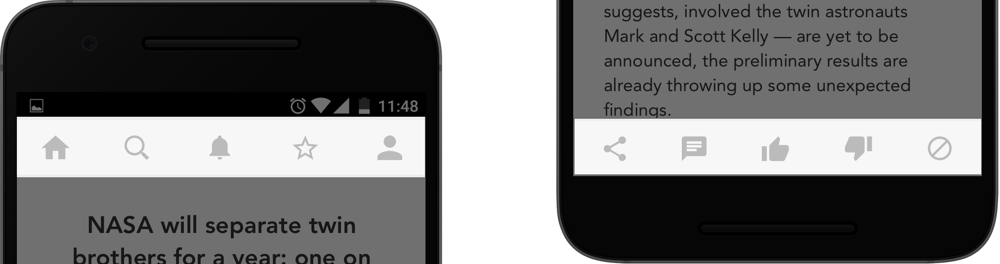

Design Challenge
The Problem
For the KPCB Design Fellows 2017 challenge, I chose to redesign Flipboard - a popular news article website that people can read on the go. I picked Flipboard because of its unique application interaction and its familiarity among millennials. The 'flipping' interaction that the application has created as its own unique identity is one of the most riveting interactions I have come across thus far. I was compelled by this, and wanted to redesign Flipboard to have a better user experience, while still retaining its unique style and originality.
Design Process
User Research - Ideation - Low Fidelity Prototype - Testing - High Fidelity Prototype
Areas of Focus
- User Research
- Interaction Design
- Exploratory Motion Design
Duration
3 Days
Process & Solution
{kind=link}
Flipboard has a very interesting visual form and a very attractive interaction design.As attractive as the app is to view and use, Flipboard still has a few limitations in its interactions. This was evident when I conducted user interviews.
After talking to three users who had used flipboard, I got some good insight into why they moved away. Some of the major findings were:
- Users felt that the interactions are too complex, with excessive transitions between pages.
- Users admitted that they had a hard time finding relevant articles from reliable sources easily, and needed to "flip" through too many pages to find what they are looking for.
- Icons are ambiguous and their functions aren’t clear from the visual representation. Some functions are represented by different icons in different pages. Other icons perform different functions in different contexts.
- The interaction paradigms are inconsistent, with users having to scroll through some articles, and ‘flip’ through others.
This redesign attempts to simplify Flipboard’s experience and interaction design by bringing preferred content to the users quickly using simple layouts, clear icons and meaningful, non-intrusive interactions.
Research
I started out with a clean slate when I began working on the Flipboard application. I had never personally used it before and I had the advantage of not having presumptions about the application when I went in. I interviewed three users who all admitted that they initially liked Flipboard for its visuals, but then they moved on to other applications soon after. I was curious to understand why. I created a detailed affinity map of all the user inputs to help me view a pattern in problems faced by the users.
{kind=link}
The key findings provided a good base for me to explore several possible concepts and interactions. I iteratively sketched out my ideas and mapped out several possible transitions between pages. I also experimented with different icons and their functions in an attempt to distinguish them clearly. I then combined similar functions and removed redundant features from the application to make the experience simpler yet comprehensive.
{kind=link}
To usability test the new interactions that I designed, I created paper prototypes of the design and imitated the application interactions. I tested the interactions with three more users by involving them in a task based usability test and think-out-loud method. I also asked them to individually identify the functions of each icon.
{kind=link}
The usability test allowed me to clearly see the underlying shortcoming of certain design decisions. I was able to make more informed changes to the re-design to make it a more transparent user experience.
{kind=link}
{kind=link}
{kind=link}
The Redesign

The homepage displays articles based on the user preferences, which can be set during onboarding or by adjusting user preferences. This way the user gets easy access to updates on topics and sources they follow and they don’t have to dig for content. A key feature of this design recommendation is the addition of better machine learning that allows the app to learn from user patterns and provide relevant content.

When a user doesn’t want to read certain type of articles from specific sources, they can choose to use the individual ‘not interested’ icons for quick removal. The application would
learn the user's behaviour and avoid updates from these sources or the specific content type.
This feature replaces the ‘more like this’ and ‘less like this’ feature on the current application, which was one of the least used features even though users complained about finding relevant content on the app.

The user can choose to remove topics from their preferences whenever they want to. This design feature went through multiple stages of testing where I used research data to understand the best possible way to integrate an unobtrusive delete feature in a transparent way. This also replaces the ‘unfollow’ option within the pages of the articles that is designated by a check icon that users found difficult to interpret.

When a user wants to save an article or read it later, they can choose to bookmark them with the new bookmarking feature that allows them to access specific articles whenever they want to.

To load more articles and updates within a specific topic, the user can flip through the article titles on the homepage and tap on articles that they would like to read. The horizontal flipping that is inspired by the native flip interaction of the app enables users to access updates under each topic while still being able to scroll through the rest of the home page to choose articles from other topics.
The article content scrolls instead of flipping since research showed that users tended to scroll and read simultaneously, and flipping felt like it was disrupting their flow. This led me to scale back the use of flipping to navigation between different articles, both on the homepage and the article page.
{kind=link}
Features such as ‘sharing’, ‘comments’, ‘likes and dislikes’ and ‘not interested’ are placed within the articles page to allow users to act on individual topics. The landing page icons are retained throughout the application. Icons for original features such as ‘tagging interesting articles’, ‘more like this’, ‘less like this’ have been replaced by these new set of simpler icons that answer to all user desired functions.
What I learnt
- Clarity comes before visual appeal. This was my first real study where I had empirical proof that users moved on from complex to other simpler applications even if they were visually very engaging.
- I am a firm believer that a design is never ‘complete’ and nothing is an ‘ideal’ solution. I am yet to find out if the recommended design changes will have any real impact on people’s perception of the app. But, being an iterative designer, I am positive that the experience can be improved every step of the way.